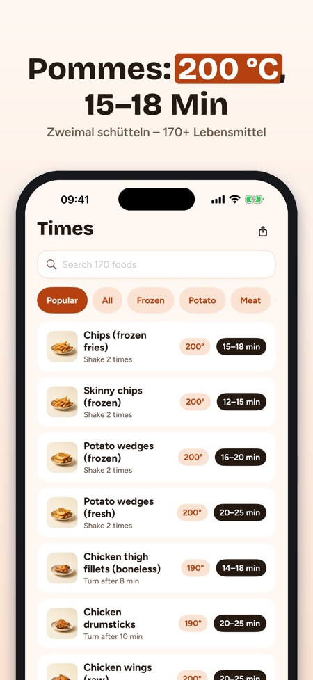
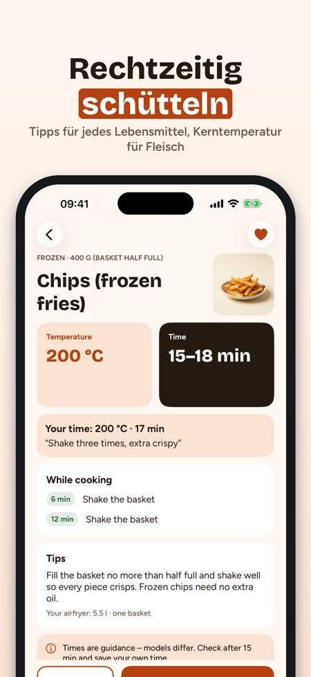
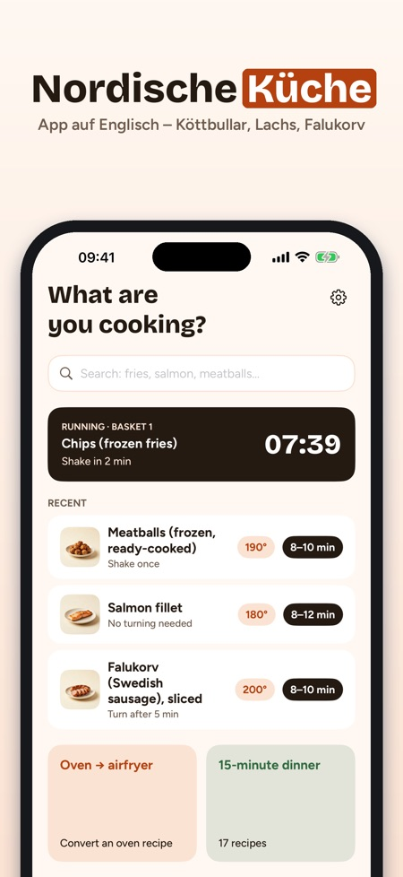

Garzeiten, Grad & Timer. Eine neue Heißluftfritteuse zu Weihnachten? Krispa zeigt Zeit und Temperatur für 170+ Lebensmittel – und der Countdown bleibt auf dem Sperrbildschirm.



Richtige Zeit, richtige Temperatur.
Keine Werbung, kein Konto – die Garzeiten-Tabelle funktioniert ohne Kauf.
Hinweis zur Sprache: Die App selbst ist auf Englisch (außerdem Schwedisch, Norwegisch, Dänisch und Finnisch), nicht auf Deutsch. Krispa ist für nordische Küchen gemacht – die Rezepte sind nordische Gerichte.
GARZEITEN FÜR 170+ LEBENSMITTEL
• Tiefkühl-Pommes, Fleischbällchen, Fischstäbchen, Lachs, Hähnchen, Gemüse, Brot und Snacks
• Temperatur, Zeitspanne und wann geschüttelt oder gewendet wird
• Tipps zu Menge, Öl und wie es knusprig wird
BACKOFEN → HEISSLUFTFRITTEUSE
• Backofentemperatur und -zeit eingeben (Ober-/Unterhitze oder Umluft)
• Vorschlag für die Heißluftfritteuse und wann du nachsehen solltest – eine Faustregel, klar als solche gekennzeichnet
TIMER, DIE SICH MELDEN
• Mitteilung, wenn geschüttelt oder gewendet werden muss und wenn das Essen fertig ist
• Zwei Körbe? Krispa startet den kürzeren Timer später, damit beide gleichzeitig fertig sind
• Bis zu vier Timer gleichzeitig mit Krispa Plus
• Der Countdown erscheint auf dem Sperrbildschirm und in der Dynamic Island
68 EIGENE REZEPTE
• Alltagsessen, Beilagen, Snacks, Backen und Weihnachtsessen aus dem Norden
• Portionen ändern – die Mengen werden neu berechnet
• Kochmodus Schritt für Schritt mit Timer pro Schritt; der Bildschirm bleibt an
• Einkaufsliste aus den Rezepten, nach Abteilung sortiert
MEINE ZEITEN
• Favoriten speichern und eigene Zeit, Temperatur und Notiz – „unsere Pommes: 17 Min., dreimal schütteln“
LEBENSMITTELSICHERHEIT
Für Hähnchen, Schwein und Hackfleisch zeigt Krispa eine Mindest-Kerntemperatur – den strengsten Rat der nordischen Lebensmittelbehörden. Fisch: prüfen, ob er durchgegart ist. Die Zeiten sind Richtwerte – Geräte unterscheiden sich, also rechtzeitig nachsehen.
HILFE
Vorheizen, Backpapier, Reinigen, Aufstellen und Sicherheit, weißer Rauch, zwei Körbe und warum das Essen nicht knusprig wird.
KRISPA PLUS
Garzeiten-Tabelle, Umrechner, ein Timer und 10 Rezepte sind ohne Kauf dabei. Krispa Plus schaltet alle 68 Rezepte, bis zu vier Timer, den Kochmodus, eigene Zeiten und die Einkaufsliste frei. Wähle ein Jahresabo (verlängert sich automatisch, jederzeit in den App-Store-Einstellungen kündbar) oder einen Einmalkauf. Neuabonnenten starten das Jahresabo mit 7 Tagen zum Testen.
Funktioniert offline. Kein Konto. Krispa ist mit keiner Gerätemarke verbunden.